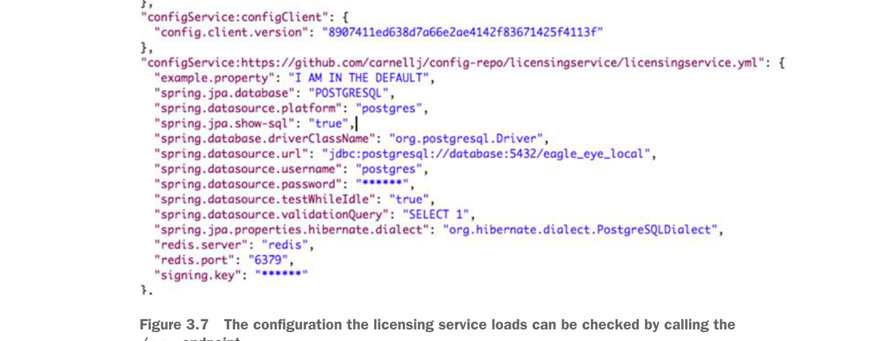

Cấu hình mà licensing service tải có thể được kiểm tra bằng cách gọi endpoint
/env.3.3.3 Kết nối nguồn dữ liệu bằng máy chủ cấu hình Spring Cloud
Ở thời điểm này, thông tin cấu hình cơ sở dữ liệu đã được inject trực tiếp vào microservice của bạn. Khi đã thiết lập cấu hình cơ sở dữ liệu, việc cấu hình licensing microservice trở thành một bài tập sử dụng các thành phần Spring tiêu chuẩn để xây dựng và truy xuất dữ liệu từ cơ sở dữ liệu Postgres. Licensing service đã được